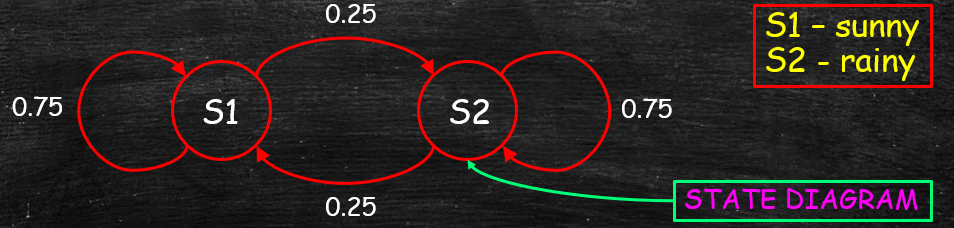
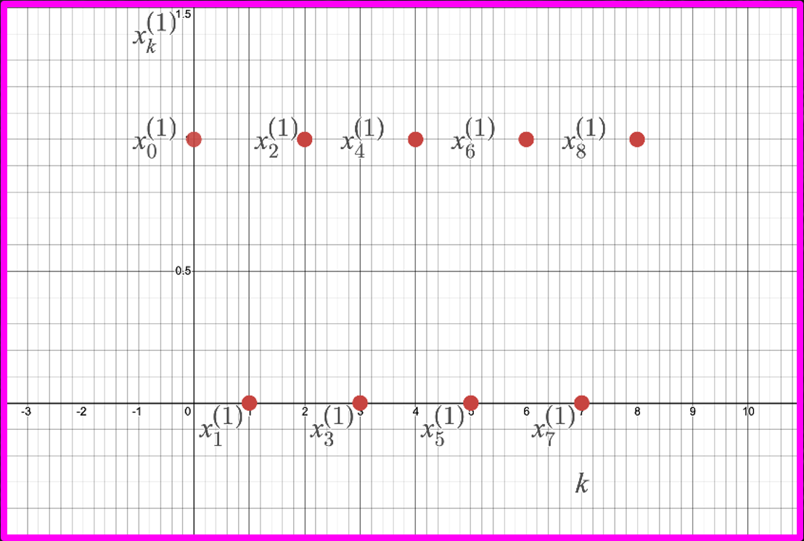

Jonathan Crofts
Nottingham Trent University
A Markov process describes a system made up of elements that can be in noe of several states, such that after a transition, the numbers in each state changes according to certain probabilities
Model assumptions:
Markov weather model (ctd)
Suppose the model predicts the weather correct 75% of the time
We can write down a matrix description of the above model
\[ P = \begin{bmatrix}\frac{3}{4}&\frac{1}{4}\\\frac{1}{4}&\frac{3}{4}\end{bmatrix} \]The matrix $P$ is called the transition matrix of the Markov process
We say that $P$ is a stochastic matrix since
\[ \sum_iP_{ij}=\sum_jP_{ij}=1 \]Typically $P$ will only be row stochastic meaning that $\displaystyle \sum_jP_{ij}=1$ only
The above fomulation provides a simple model for describing the Nottingham weather:
\[ \begin{align*} \mathbf{x}_{k+1} &= P^T\mathbf{x}_k\\ &=\begin{bmatrix}\frac{3}{4}&\frac{1}{4}\\\frac{1}{4}&\frac{3}{4}\end{bmatrix}\mathbf{x}_k\qquad \mathbf{x}_0=\mathbf{c} \end{align*} \]$\mathbf{x}_k$ gives the probability of rain or sunshine on the $k$th day
Multiplying out we see that
\[ \begin{align*} x^{(1)}_{k+1}&=\frac{3}{4}x^{(1)}_k+\frac{1}{4}x^{(2)}_k\quad x^{(1)}_0=c^{(1)}\\ x^{(2)}_{k+1}&=\frac{1}{4}x^{(1)}_k+\frac{3}{4}x^{(2)}_k\quad x^{(2)}_0=c^{(2)} \end{align*} \]Now suppose that $\displaystyle c^T=\begin{bmatrix}1&0\end{bmatrix}$, that is it is sunny today, then
\[ \begin{align*} \begin{bmatrix}x^{(1)}_1\\x^{(2)}_1\end{bmatrix}&=\begin{bmatrix}\frac{3}{4}\\\frac{1}{4}\end{bmatrix}\qquad \text{\textcolor{red}{75\% chance of sunshine;~~ 25\% chance of rain}}\\ \begin{bmatrix}x^{(1)}_2\\x^{(2)}_2\end{bmatrix}&=\begin{bmatrix}\frac{3}{4}\cdot\frac{3}{4}+\frac{1}{4}\cdot\frac{1}{4}\\\frac{1}{4}\cdot\frac{3}{4}+\frac{3}{4}\cdot\frac{1}{4}\end{bmatrix}\\ &=\begin{bmatrix}\frac{10}{16}\\\frac{6}{16}\end{bmatrix}\qquad \text{\textcolor{red}{62\% chance of sunshine;~~ 38\% chance of rain}} \end{align*} \]Importantly we see that uncertainty increases as we move further in to the future, as expected
Note that
\[ \chi_{P^T}(t) = (t-1)\left(t-\frac{1}{2}\right) \]Thus $\lambda=1$ is a dominant eigenvalue and so for large $k$ the vector $\mathbf{x}_k$ will tend to a constant vector $\mathbf{x}^*$
It can be shown that this constant vector is given by the eigenvector $\mathbf{v}$ of $P^T$ corresponding to $\lambda=1$
Thus in our model
\[ \mathbf{x}_k\longrightarrow \mathbf{x}^*=\begin{bmatrix}0.5\\0.5\end{bmatrix} \quad\text{as $k\longrightarrow \infty$} \]Since $\mathbf{x}^*$ is a probability vector we have to normalise the eigenvector $\mathbf{v}$ as follows \[ \mathbf{x}^* = \frac{\mathbf{v}}{\sum_iv^{(i)}} \]
More generally we define an $n$-state Markov process by a transition matrix $P\in\mathbb{R}^{n\times n}$ given by
\[ P = \begin{bmatrix}p_{11}&p_{12}&\cdots&p_{1n}\\p_{21}&&&p_{2n}\\\vdots&&&\vdots\\p_{n1}&p_{n2}&\cdots&p_{nn}\end{bmatrix} \]Here, $\displaystyle P_{ij}$ gives the probability of moving between states $i$ and $j$
The state vector $\mathbf{x}_k$ contains the probabilities of being in each state at time $t=k$ and so
\[ 0\leq x^{(i)}_k\leq 1 \forall i\qquad \text{and} \qquad \sum_{i}x^{(i)}_k=1 \]Since states at different 'times' are related by the equation
\[ \mathbf{x}_{k+1} = P^T\mathbf{x}_k \]We have that for a given initial condition $\mathbf{x}_0$ the solution is
\[ \color{red}{\boxed{\color{white}{ \mathbf{x}_{k} = \left(P^T\right)^k\mathbf{x}_0 }}} \]As usual we can use the eigendecomposition of $P^T$ in order to compute powers of $P^T$:
\[ P^T=HJH^{-1} \implies \mathbf{x}_k = HJ^kH^{-1}\mathbf{x}_0 \]And so again we deploy known results on powers of Jordan matrices
It is easy to show $\lambda=1$ is an eigenvalue of $P^T$ since
\[ \begin{align*} \left|P^T-1\cdot I_n\right|&=\begin{vmatrix}p_{11}-1&p_{21}&\cdots&p_{n1}\\p_{21}&p_{22}-1&\cdots&p_{2n}\\\vdots&&\ddots&\vdots\\p_{1n}&p_{2n}&\cdots&p_{nn}-1\end{vmatrix} \quad \text{\textcolor{red}{$(R_1\longrightarrow R_1+R_2+\cdots+R_n)$}} \\ &=\begin{vmatrix}\sum_ip_{1i}-1&\sum_ip_{2i}-1&\cdots&\sum_ip_{ni}-1\\p_{21}&p_{22}-1&\cdots&p_{2n}\\\vdots&&\ddots&\vdots\\p_{1n}&p_{2n}&\cdots&p_{nn}-1\end{vmatrix}\\ &= \begin{vmatrix}0&0&\cdots&0\\p_{21}&p_{22}-1&\cdots&p_{2n}\\\vdots&&\ddots&\vdots\\p_{1n}&p_{2n}&\cdots&p_{nn}-1\end{vmatrix} = 0 \end{align*} \]From which the result follows
The transition matrix $\displaystyle P_1=\begin{bmatrix}0&1\\1&0\end{bmatrix}$ has characteristic polynomial given by
\[ \chi_{P_1^T}(t) = (t+1)(t-1) \]And the eigenvector corresponding to $\lambda=1$ is
\[ \mathbf{v}=\begin{bmatrix}0.5 &0.5\end{bmatrix}^T\qquad \text{\textcolor{red}{(Exercise)}} \]However $\mathbf{x}_k$ does not tend to $\mathbf{x}^*=\mathbf{v}$ for large $k$
To see this let $\mathbf{x_0}=\begin{bmatrix}1&0\end{bmatrix}^T$ then
\[ \mathbf{x}_1=\begin{bmatrix}0\\1\end{bmatrix}, \quad\mathbf{x}_2=\begin{bmatrix}1\\0\end{bmatrix}, \quad\mathbf{x}_3=\begin{bmatrix}0\\1\end{bmatrix}\ldots \]This sequence is periodic and so does not converge to $\mathbf{x}^*$
Let $P$ be the following matrix
\[ P = \frac{1}{4}\begin{bmatrix}2&2&0&0\\0&4&0&0\\2&0&1&1\\3&0&0&1\end{bmatrix} \]Such that $P=HJH^{-1}$ where
\[ H =\begin{bmatrix}1&1&0&0\\1&0&0&0\\1&5&1&0\\1&3&0&1\end{bmatrix} \quad H^{-1}=\begin{bmatrix}0&1&0&0\\1&-1&0&0\\-5&4&1&0\\-3&2&0&1\end{bmatrix}\quad J=\begin{bmatrix}4&0&0&0\\0&2&0&0\\0&0&1&1\\0&0&0&1\end{bmatrix} \]Compute the probability that after 10 transitions an element that (a) started in the first state will still be in the first state; and (b) started in the third state will have moved to the second
Recall that $\displaystyle (P^k)_{ij}$ is the probability of moving from state $i$ to state $j$ in $k$ steps
(a)
We know that $\displaystyle P^k = HJ^kH^{-1}$ and that
\[ J^{10} = \frac{1}{4^{10}}\begin{bmatrix}4^{10}&&&\\&2^{10}&&\\&&1&10\\&&0&1\end{bmatrix} \]Thus
\[ \begin{align*} (P^{10})_{11} = \left(HJ^{10}H^{-1}\right)_{11} &= \frac{1}{4^{10}}\begin{bmatrix}1&1&0&0\\1&0&0&0\\1&5&1&0\\1&3&0&1\end{bmatrix}\begin{bmatrix}4^{10}&&&\\&2^{10}&&\\&&1&10\\&&0&1\end{bmatrix} \begin{bmatrix}0&1&0&0\\1&-1&0&0\\-5&4&1&0\\-3&2&0&1\end{bmatrix}\\ &=\frac{1}{4^{10}}\begin{bmatrix}1&1&0&0\\*&*&*&*\\*&*&*&*\\*&*&*&*\end{bmatrix}\begin{bmatrix}0&*&*&*\\2^{10}&*&*&*\\-5-3\cdot 10&*&*&*\\-3&*&*&*\end{bmatrix} = \frac{1}{4^{10}}2^{10} =\color{red}{\boxed{\color{white}{\left(\frac{1}{2}\right)^{10}}}} \end{align*} \](b)
\[ \begin{align*} (P^{10})_{32} = \left(HJ^{10}H^{-1}\right)_{32} &= \frac{1}{4^{10}}\begin{bmatrix}1&1&0&0\\1&0&0&0\\1&5&1&0\\1&3&0&1\end{bmatrix}\begin{bmatrix}4^{10}&&&\\&2^{10}&&\\&&1&10\\&&0&1\end{bmatrix} \begin{bmatrix}0&1&0&0\\1&-1&0&0\\-5&4&1&0\\-3&2&0&1\end{bmatrix}\\ &=\frac{1}{4^{10}}\begin{bmatrix}*&*&*&*\\*&*&*&*\\1&5&1&0\\*&*&*&*\end{bmatrix}\begin{bmatrix}*&4^{10}&*&*\\*&-2^{10}&*&*\\*&4+2\cdot 10&*&*\\*&2&*&*\end{bmatrix}\\ &= \frac{1}{4^{10}}\left(4^{10}-5\cdot 2^{10}+24\right)\\ &=1-5\left(\frac{1}{2}\right)^{10}+24\left(\frac{1}{4}\right)^{10} \approx \color{red}{\boxed{\color{white}{0.9951}}} \end{align*} \]